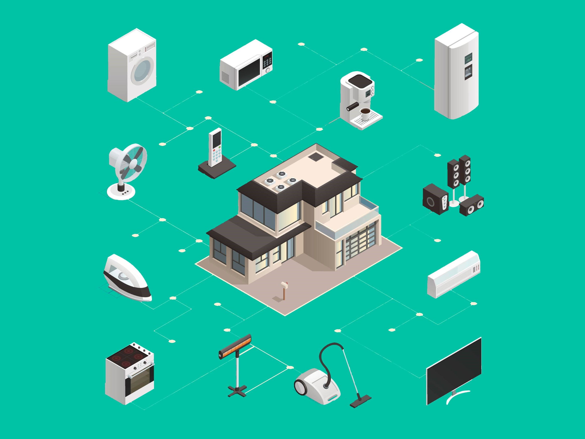

Internet of Things Research


SensorTile Research Team
For this research project, I started by learning the principles of EmbeddedML and then using this knowledge to accomplish tasks such as having the SensorTile recognize an acceleration motion or being flipped. For the final project, my team and I implemented two gyroscope motions to train the SensorTile. We acted as if the SensorTile was a key. The first motion was turning the “key” to open a door and the second one was turning the “key” to the unlock position and then turning it back to lock it. These motions were done by both rotating the key to the right and to the left. With this device a contactless, gesture recognizing digital key can be created for convenience and longevity.
Here is the video where I train the SensorTile to recognize motions and then do some test motions.
Here is the output of code that corresponds with the video.